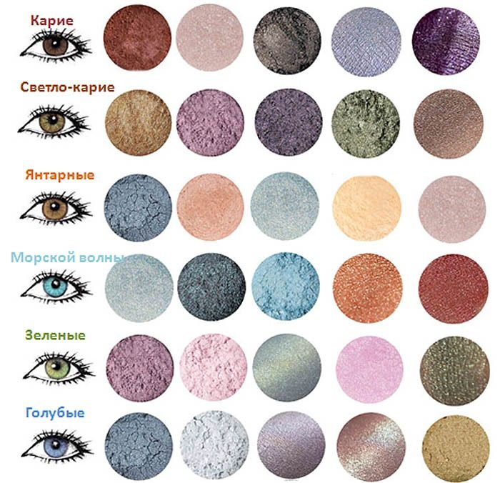

ГЛАЗА
Важно знать какого типа глаза, с которыми работаете и, исходя из этого поймете, как нужно правильно наносить макияж глаз (расширить, раздвинуть, приподнять и т.п.). На втором этапе ознакомьтесь с техникой, а на третьем со схемами нанесения макияжа.
Этапы в макияже глаз:
I. Определение типа глаз;
II. Техника макияжа глаз;
III. Схемы нанесения макияжа
ГУБЫ
В профессиональном макияже оформление губ является завершающим этапом в создании образа.
Для этого нужна чистая линия карандаша и гладкое нанесение помады, что возможно только на гладких хорошо
подготовленных губах. Еще на первых этапах подготовки лица к макияжу нужно посмотреть на поверхность губ,
и если есть проблемы: сухие губы, с трещинами, покрасневший контур и т.д. – нужно с помощью питательного или
увлажняющего крема, специального геля и других препаратов устранить недостатки – затонировать или припудрить губы.
